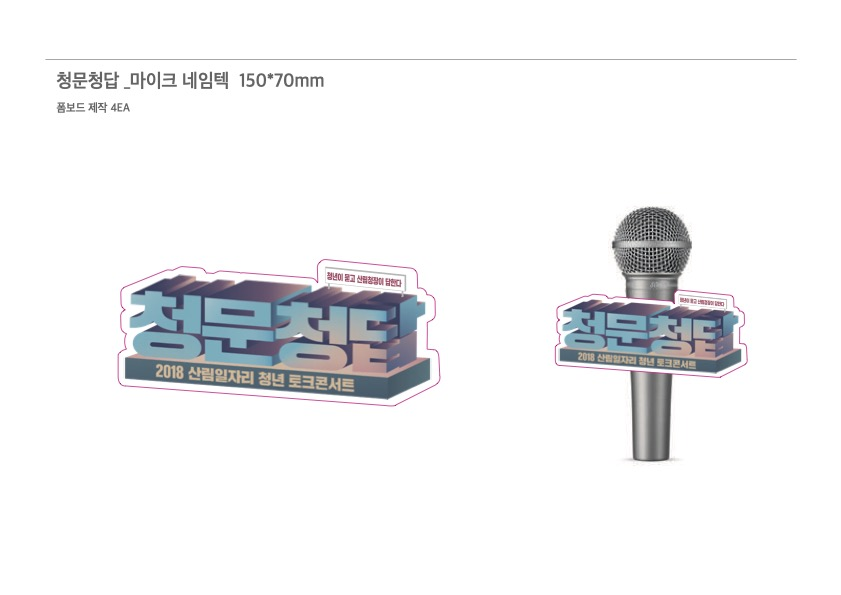
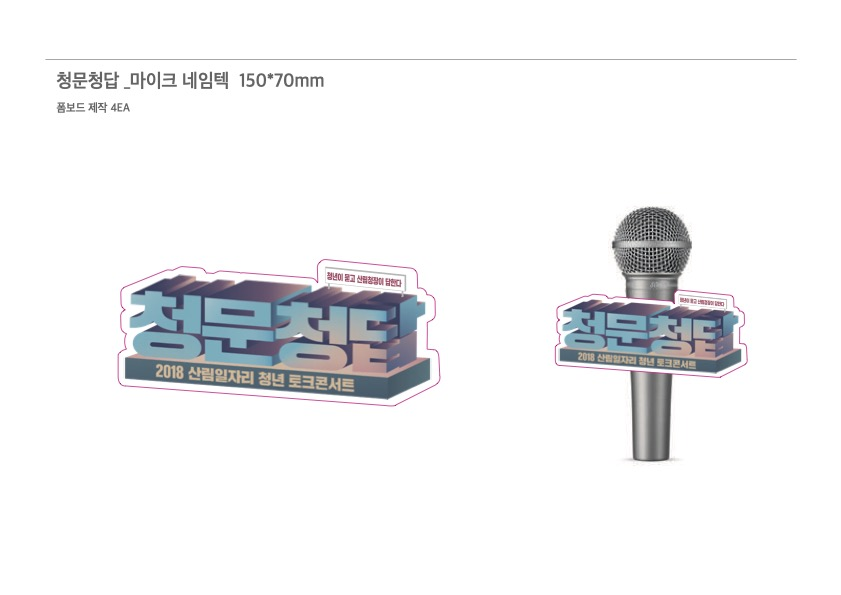

청문청답
산림청이 주관한 ‘청문청답’ 토크콘서트 포스터 디자인이에요. 산림청에서 시안을 정말 마음에 들어 해주셔서, 타이틀 디자인을 실제 조형물로까지 제작했답니다. 포스터 작업이 현실로 확장된 멋진 경험이었어요.

산림청이 주관한 ‘청문청답’ 토크콘서트 포스터 디자인이에요. 산림청에서 시안을 정말 마음에 들어 해주셔서, 타이틀 디자인을 실제 조형물로까지 제작했답니다. 포스터 작업이 현실로 확장된 멋진 경험이었어요.


 
